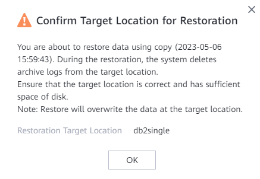

This section describes how to restore a DB2 database or tablespace set that has been backed up to the original or a new location.
Prerequisites
Before restoration, ensure that the remaining space of the data directory at the target location for restoration is greater than the size of the copy used for restoration before reduction. Otherwise, restoration will fail.
Precautions
During the restoration, the system automatically terminates the session connection with the target database. During the restoration, do not establish a new session connection to the database. Otherwise, the restoration job will fail.
Procedure
- Choose Explore > Copy Data > Databases > DB2.
- Search for copies by DB2 resource or copy. This section describes how to search for copies by resource.
On the Resources tab page, locate the resource to be restored by resource name and click the name.
- Select the resource for copy-based restoration.
- Specify a copy or a point in time for restoration.
- Restoration using a specified copy
- Select the year, month, and day in sequence to find the copy.
If
 is displayed on the date, copies exist in the month or on the day.
is displayed on the date, copies exist in the month or on the day. - Click
 to go to the copy data page.
to go to the copy data page. - On the copy data page, click and choose in the row where the desired copy resides.
- Select the year, month, and day in sequence to find the copy.
- Restoration to a specified point in time
- Select the year, month, and day in sequence to find the copy.
If
 is displayed below a month or day, copies exist in the month or on the day.
is displayed below a month or day, copies exist in the month or on the day. - Click
 to go to the copy data page.
to go to the copy data page. - On the Copy Data page, click
 . In the blue part on the timeline, select a copy and choose .
. In the blue part on the timeline, select a copy and choose .

- For 1.5.0, a maximum of 100 copies can be displayed on the timeline. You can click
 to view all copies.
to view all copies. - During point-in-time restoration, the information about the copy used for restoration cannot be obtained on the management page. Therefore, users cannot view the copy information of the restoration job on pages of the restoration job and related events.
- For 1.5.0, a maximum of 100 copies can be displayed on the timeline. You can click
- Select the year, month, and day in sequence to find the copy.
- Restoration using a specified copy
- Restore the DB2 database to its original or a new location.
- Set parameters for restoring a DB2 database or tablespace set.
Table 1 describes the related parameters.
Table 1 Parameters for restoring a DB2 database or tablespace set Parameter
Description
Restore To
Select either Original location or New location.
Note
For tablespace set restoration, the value can only be Original location.
Location
If you select Original location for the Restore To parameter, the original location is displayed.
Target Host/Cluster
Target host or cluster for restoration, which is mandatory if you select New location for the Restore To parameter.
Target Instance
Target instance for restoration, which is mandatory if you select New location for the Restore To parameter.
Target Database
Target database for restoration, which is mandatory if you select New location for the Restore To parameter.
Whether to restore data to the end time of the log
This parameter is displayed only when the cluster type is Database Partitioning Feature and point-in-time restoration is selected.
This function is disabled by default. After this function is enabled, if the database cannot be restored to a specified time point, it can be restored to the end time of the log.
Script to Run Before Restoration
You can execute a custom script as required before a restoration job is executed or after the restoration job succeeds or fails.
Enter a script name that ends with .sh. Ensure that the script has been stored in the DataBackup/ProtectClient/ProtectClient-E/sbin/thirdparty path under the ProtectAgent installation directory and the user (user root by default) who has logged in to the database host is permitted to execute the script.
NOTE:If Script to Run upon Restoration Success is configured, the status of the restoration job is displayed as Successful on the product even if the script fails to be executed. Check whether the job details contain a message indicating that the post-processing script fails to be executed. If yes, modify the script in a timely manner.
Script to Run upon Restoration Success
Script to Run upon Restoration Failure
- Click OK.
- In the dialog box that is displayed, confirm the information and click OK.

- Set parameters for restoring a DB2 database or tablespace set.